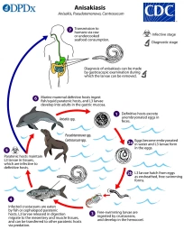
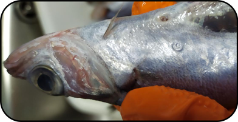
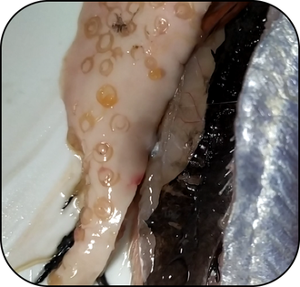
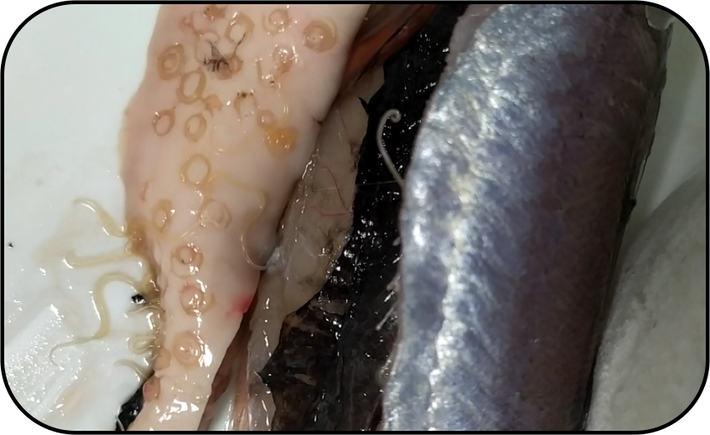

5 de agosto de 2020
El anisakis (Anisakis sp.) es un parásito cada vez más frecuente en pescados y cefalópodos. El hombre actúa como hospedador accidental (Imagen 1) y lo adquiere por el consumo de pescado crudo o en preparaciones que no lo matan. En los últimos años también se ha visto asociado a la aparición de reacciones alérgicas.

Imagen 1:Ciclo biológico de Anisakis sp.Fuente:CDCLa ingesta del parásito puede provocar dos tipos distintos de enfermedad:
- Enfermedad digestiva (Anisakiosis o anisakiasis): es un cuadro caracterizado por nauseas, fiebre, vómitos e incluso fiebre.
- No invasiva: es un cuadro de leve a moderado de gastritis y/o enteritis que se produce cuando las larvas no llegan a perforar la pared de la mucosa intestinal o gástrica.
- Invasiva: es un cuadro de enfermedad digestiva que puede llegar a ser grave y se produce cuando las larvas consiguen introducirse en la mucosa intestinal.
- Alergia al anisakis: es una reacción de hipersensibilidad tipo I mediada por IgE que puede provocar desde urticaria a un shock anafiláctico.
La enfermedad aparece tras la ingesta entre los 15 – 30 minutos a varias horas. En Algunas publicaciones se ha especulado que la reacción alérgica se podría producir independientemente de que el pescado estuviera congelado o bien cocinado
En España hay una alta prevalencia de infección por anisakis. Un estudio8 realizado sobre 868 personas elaborado por la Sociedad Española de Alergología e Inmunología Clínica se observo presencia de sensibilización contra antígenos de anisakis en un 38.1% de los pacientes que habían sufrido angioderma-urticaria. Se cree que podría her reacciones cruzadas con otros antígenos como los del marisco. La sensibilización se puede producir por inhalación o contacto con los alérgenos de anisakis, riesgo que deben tener en cuenta todas aquellas personas que manipulen pescado habitualmente10.
Anisakis sp. en el músculo de una bacaladilla (Micromesistius poutassou). Fuente: propia
Algunas de las medidas recomendadas por la AECOSAN para evitar la infección son:
- Comprar pescado eviscerado o retirarlas cuanto antes.
- Realizar el retirado de vísceras de forma correcta, ya que la manipulación activa las larvas.
- Mantener la cadena de frío, el pescado debe estar a 4ºC o menos para evitar el deterioro y la activación de las larvas (Imagen 2 y 3).
- Cocinar hasta alcanzar 60ºC o más durante 1 min en toda la pieza.
- Si se va a consumir crudo congelar almenos a -20 ºC durante 5 días en congelador doméstico.
Larvas de Anisakis sp. en una bacaladilla a 4ºC. Fuente: propia
Larvas de Anisakis sp. activas tras 20 min a temperatura ambiente. Fuente: propia
Las proteínas alergénicas del anisakis son termoestables por lo que pueden resistir tanto a la congelación como la cocción. De hecho hay un estudio1 que muestra reacciones alérgicas tras la ingesta de pescado congelado o correctamente cocinado.
Pese a todo, la AECOSAN3 y numerosos estudios avalan que la congelación y el cocinado son suficientes para evitar las reacciones alérgicas y la enfermedad digestiva, concluyen que es necesario una larva viva para desencadenar la reacción.
El aumento de la parasitación en los pescados (del que hablaré en otro articulo), está provocando una mayor probabilidad de exposición al parásito por lo que las infecciones y la sensibilización a anisakis todavía es objeto de estudio.
En definitiva, ante este panorama las personadas alérgicas deberían realizar un correcto cocinado o evitar el pescado de su dieta, a excepción de los procedentes de piscifactoria. Actualmente no hay evidencias clínicas3 de que el parásito muerto cause alergia pero este fenómeno todavía es objeto de estudio por lo que no se puede descartar totalmente que personas previamente sensibilizadas puedan reaccionar ante antígenos del parásito muerto.
Fuentes:
- Audicana, M.T., Ansotegui, I.J., De Corres, L.F. y Kennedy, M.W. (2002). Anisakissimplex: dangerous-dead and alive? Trends in Parasitology, 18 (1), pp: 20-25.
- AESAN (2019) recuperado en 03 de Agosto de 2020 de http://www.aecosan.msssi.gob.es/AECOSAN/web/para_el_consumidor/ampliacion/anisakis.htm
- AESAN .(2016). Informe del Comité Científico de la Agencia Española de Consumo, Seguridad Alimentaria y Nutrición (AECOSAN) en relación a la alergia a Anisakis. Revista del comité científico, 24, 23-33. Recuperado en 03 de agosto de 2020, de http://www.aecosan.msssi.gob.es/AECOSAN/docs/documentos/seguridad_alimentaria/evaluacion_riesgos/informes_comite/ALERGIA_ANISAKIS.pdf
- AESAN .(2009). Informe del Comité Científico de la Agencia Española de Seguridad Alimentaria y Nutrición (AESAN) sobre la incidencia de la eliminación del pescado o partes del mismo en relación con la reducción de la prevalencia de la anisakiosis humana. Revista del comité científico, 10, 19-25. Recuperado en 03 de agosto de 2020, de http://www.aecosan.msssi.gob.es/AECOSAN/docs/documentos/seguridad_alimentaria/evaluacion_riesgos/informes_comite/REDUCCION_PREVALENCIA_ANISAKIOSIS.pdf
- AESAN .(2007). Informe del Comité Científico de la Agencia Española de Seguridad Alimentaria y Nutrición (AESAN) sobre medidas para reducir el riesgo asociado a la presencia de Anisakis . Revista del comité científico, 6, 59-65. Recuperado en 03 de agosto de 2020, de http://www.aecosan.msssi.gob.es/AECOSAN/docs/documentos/seguridad_alimentaria/evaluacion_riesgos/informes_comite/TRATAMIENTOS_ANISAKIS.pdf
- Caballero, M.L., Moneo, I., Gómez-Aguado, F., Corcuera, M.T., Casado, I. y Rodríguez-Pérez, R. (2008). Isolation of Ani s5, an excretory-secretory and highly heat-resistant allergen useful for the diagnosis of Anisakislarvaesensitization. Parasitology Research, 103 (5), pp: 1231-1233.
- Caballero, M.L. y Moneo, I. (2004). Several allergens from Anisakissimplex are highly resistant to heat and pep-sin treatments. Journal of Parasitology Research, 93 (3), pp: 248-251.
- Fernández de Corres, L., Del Pozo, M.D., Aizpuru, F. y Buendía, E. (2001) Prevalencia de la sensibilización a Anisakissimplexen tres áreas españolas en relación las diferentes tasas de consumo de pescado. Relevancia de la aler-gia a Anisakis simplex. Estudio Multicéntrico de la SEAIC. Alergología e Inmunología Clínica, 16, pp: 337-346.
- González Fernández, J. (2018). Nuevos alérgenos de Anisakis simplex: estudios in silico e in vitro (Doctoral dissertation, Universidad Complutense de Madrid).
- López-Serrano, M.C., Alonso Gómez, A., Moreno-Ancillo, A., Daschner, A. y Suárez de Parga, J. (2000). Anisaki-asis gastro-alérgica: Hipersensibilidad inmediata debido a parasitación por Anisakissimplex. Alergología e Inmunología Clínica, 15, pp: 230-236.
- Sastre, J., LLuch-Bernal, M., Quirce, S., Arrieta, I., Lahoz, C., Del Amo, A., Fernández-Caldas, E. y Marañón, F.A. (2000). Double-blind, placebo-controlled oral challenge study with lyophilized larvae and antigen of the fish parasite Anisakis simplex. Allergy, 55, pp: 560-564
- Solas, M.T., García, M.L., Rodríguez-Mahillo, A.I., González-Muñoz, M., De las Heras, C. y Tejada, M. (2008). Anisakis antigens detected in fish muscle infested with Anisakis simplex L3. Journal of Food Protection, 71 (6), pp: 1273-1276.
- Vicente Pardo, José Manuel. (2016). El anisakis y sus enfermedades como enfermedad profesional. Medicina y Seguridad del Trabajo, 62(244), 223-240. Recuperado en 03 de agosto de 2020, de http://scielo.isciii.es/pdf/mesetra/v62n244/inspeccion.pdf